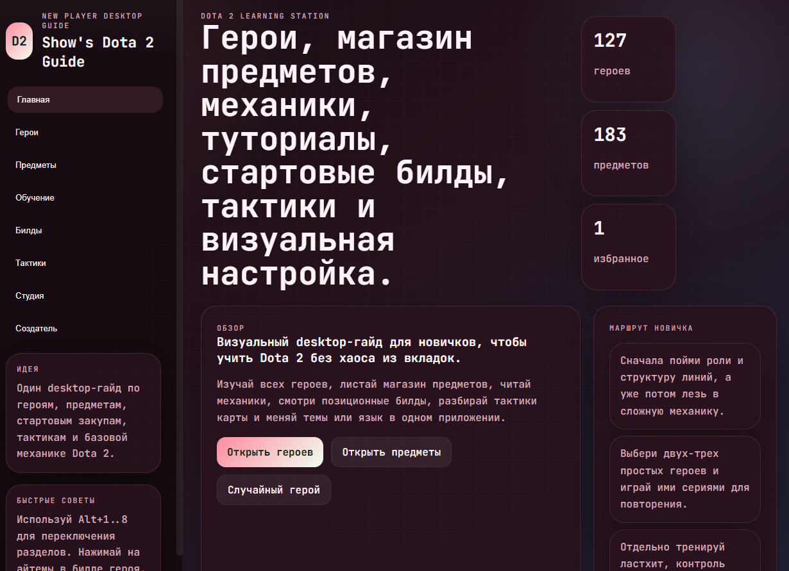
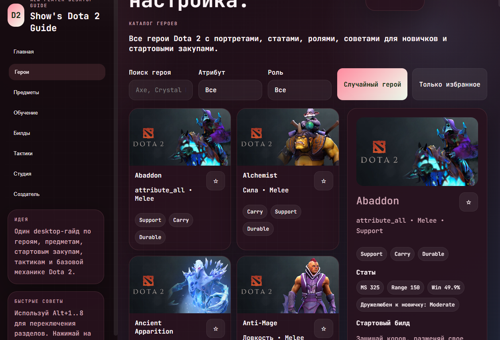
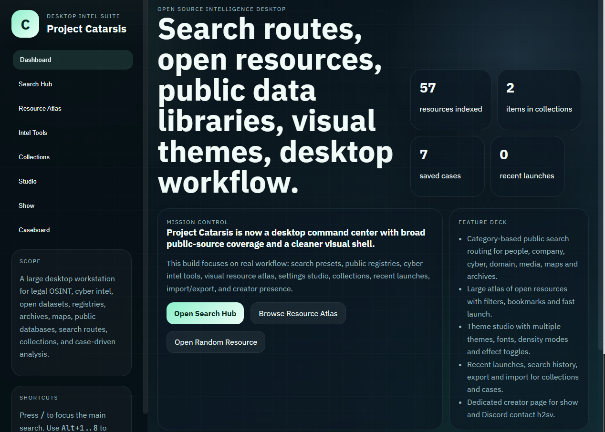
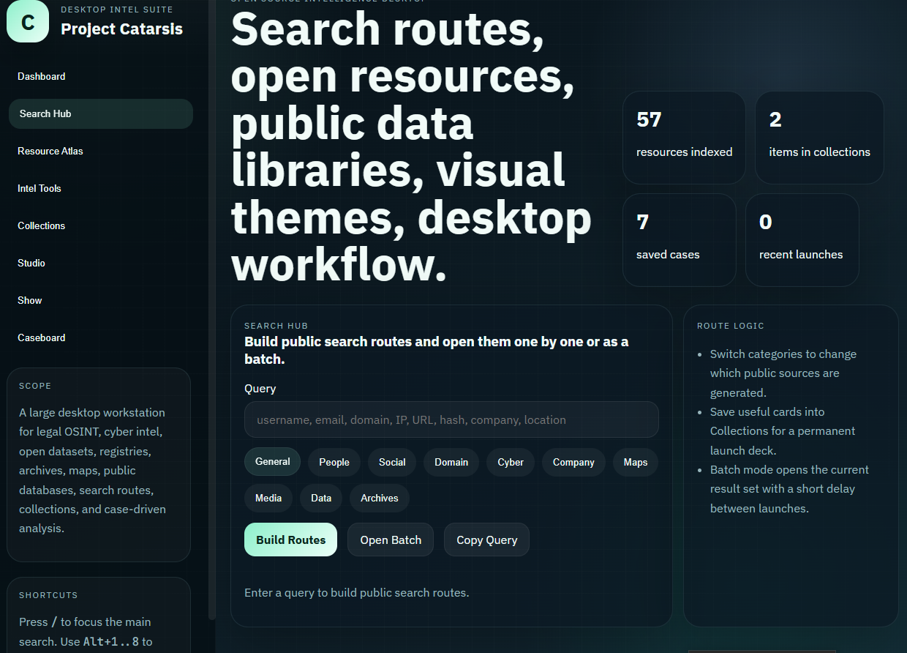

Show's Dota 2 Guide
Полный десктоп-гайд с героями, предметами, сборками, тактиками и стартовыми планами.
Скачать ZIPCatarsis Project
Новое из мира аналитики и киберспорта
Полный набор материалов для Dota 2 и OSINT-разведки. Здесь описаны тайминги, персонажи, мета-герои, лоры, предметы, сайты поисковых систем, фишки и более 57 источников для поиска информации.
Продукты
Desktop-гайд, который собрал все важное: героев, шоп, сборки, механику, тайминги и позиционную игру. Это идеальный старт для тех, кто хочет быстро прокачать свою игру.

Реальный интерфейс гида
Герои и предметыПолный OSINT-пакет, включающий более 57 проверенных источников, рабочие инструменты и схемы для поиска данных с максимальной безопасностью.

Реальный рабочий интерфейс
Источники и инструментыЗагрузки
Полный десктоп-гайд с героями, предметами, сборками, тактиками и стартовыми планами.
Скачать ZIPСобранный набор из 57+ источников, сервисов и инструментов для безопасной разведки.
Скачать ZIPВнутри каждого материала
Глубокий разбор механик, ролей, стартовых покупок и метовых героев. В сборнике есть советы по позиции, поддержке, керри, а также разбор карт и ключевых моментов.
Мощные сервисы, безопасные ресурсы и пошаговые подходы к разведке. Внутри — сайты, инструменты и 57+ источников для поиска людей, компаний и цифровых следов.
Материалы оформлены как полный набор для изучения и быстрого применения. Удобно читать, легко использовать и быстро внедрять в практику.
О проекте
Catarsis Project объединяет гайды по Dota 2 и материалы по OSINT-разведке. Каждый сборник построен так, чтобы ты мог быстро переключаться между теорией и практикой.
Catarsis Project сделан, чтобы объединять сильные стороны киберспорта и разведки, давать структуру знаниям и создавать яркую визуальную подачу.
Контакты
h2sv (Show)